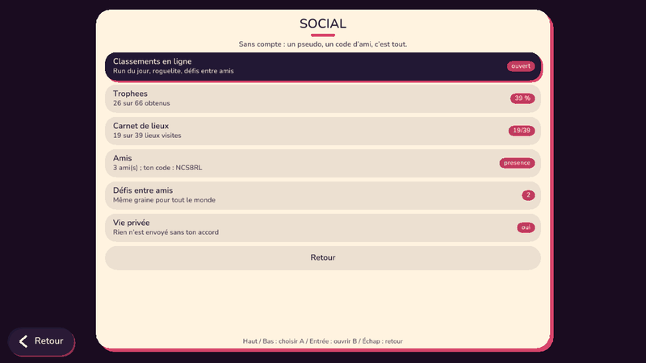
01 Ecran Social
Une seule porte : Jouer > « Social ». Six rubriques : classements, trophees, carnet de lieux, amis, defis, vie privee. Sans compte : un pseudo et un code d'ami.
Avant : un tableau de scores LOCAL de 10 lignes dans « Run du jour ».

02 Classement du run du jour
Top 10 mondial du jour, « Ma position » en tete (#3 sur 42), ta ligne surlignee. Heros, temps, score. Le serveur recalcule la graine du jour : une graine fausse est refusee.
Un seul score par joueur et par tableau (le meilleur) ; jours anciens elagues.
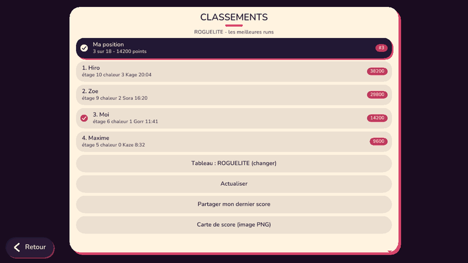
03 Classement du roguelite
Les meilleures runs : score, etage atteint, chaleur (palier), heros, temps. Meme page, on change de tableau d'un bouton.
Plausibilite : le score doit tenir dans le temps et l'etage declares.
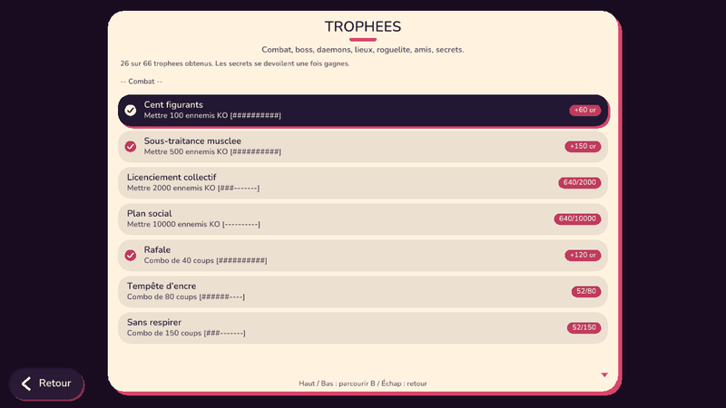
04 Trophees
66 trophees en 9 familles (combat, boss, daemons, lieux et monuments, roguelite, run du jour, multi, amis et defis, secrets), chacun avec sa progression x / objectif et sa prime d'or. Les secrets restent « ??? » jusqu'a leur obtention.
S'ajoutent aux 80 succes d'origine (aucun renommage, sauvegarde compatible).
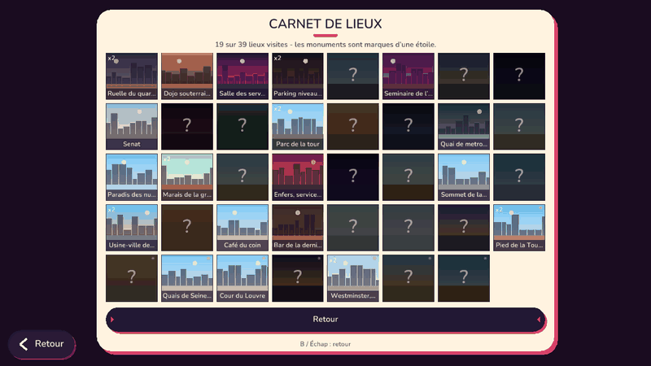
05 Carnet de lieux
Les 39 lieux de la campagne en vignettes (ciel, sol, skyline du lieu) : sombres avec « ? » tant que non visites, avec leur nom et le nombre de visites ensuite. Les 8 villes et monuments portent une etoile.
Se remplit tout seul en jouant : une notification discrete annonce chaque nouveau lieu.
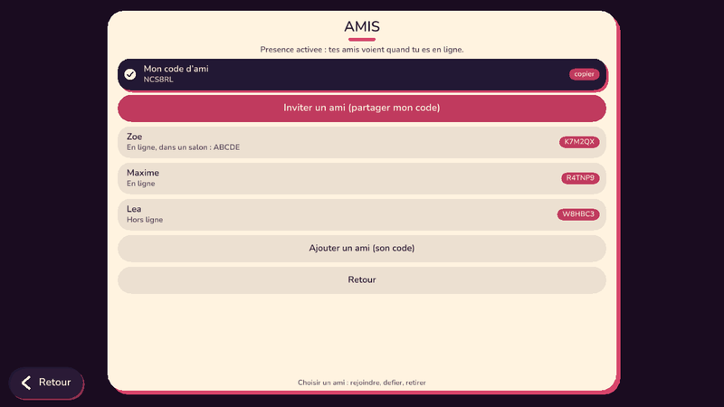
06 Amis par code, presence, invitation
Ton code d'ami (6 caracteres) a donner a qui tu veux ; liste locale d'amis ; presence (en ligne, dans un salon + son code) si TU l'actives ; « Inviter » ouvre le partage du telephone ; « Rejoindre son salon » en un geste.
Aucun compte : le serveur ne garde la presence que 90 secondes, en memoire.
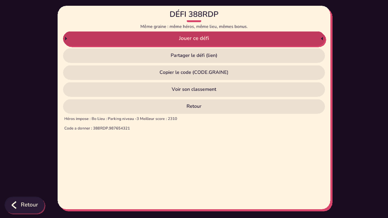
07 Defis entre amis (meme graine)
Un defi = une graine : meme heros, meme lieu, memes bonus pour tout le monde. Le lien ?defi=CODE.GRAINE se partage ; chacun joue, le classement du defi compare les scores.
Le code est derive de la graine : un faux code est refuse par le serveur.
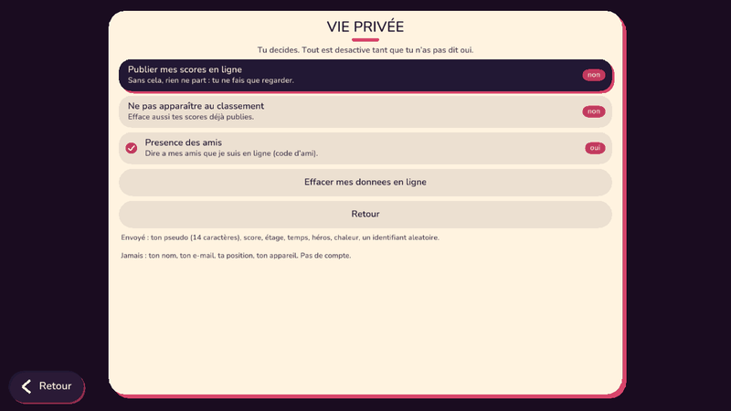
08 Vie privee
Tout est ferme tant que tu n'as pas dit oui. Trois interrupteurs (publier mes scores, ne pas apparaitre, presence) et « Effacer mes donnees en ligne ». La page dit ce qui part : pseudo, score, etage, temps, heros, chaleur, un identifiant aleatoire. Jamais ton nom ni ta position.
« Ne pas apparaitre » efface aussi ce qui etait deja publie.
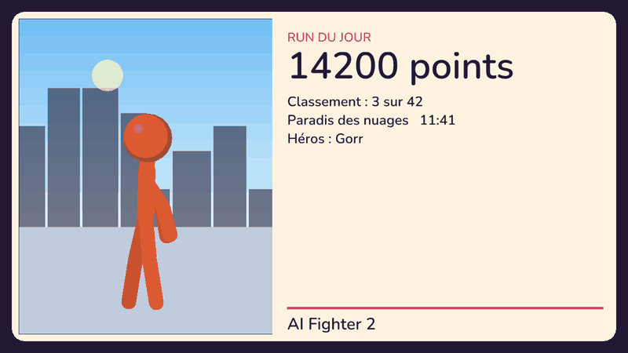
09 Carte de score (paysage)
Generee par le moteur : lieu en toile de fond, ton heros, score, rang, temps, heros, chaleur. Exportee en PNG (telechargement sur le web, fichier sur PC) ; « Partager » ouvre le partage du telephone avec le texte et le lien.
Rien de personnel sur la carte.
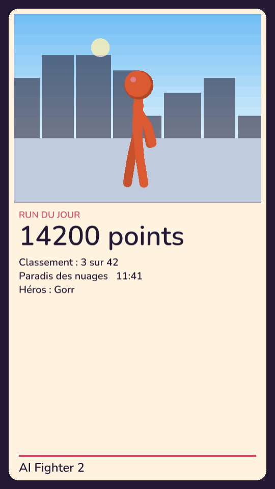
10 Carte de score (telephone)
Meme carte, mise en page portrait : elle s'adapte au format de l'ecran.
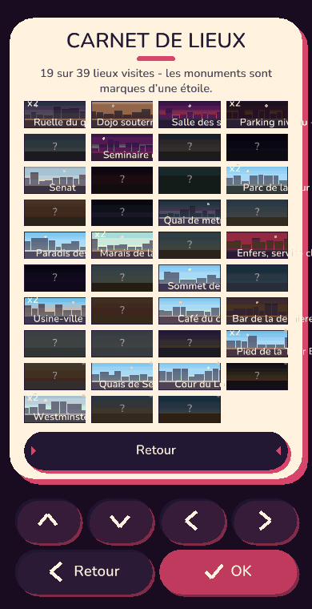
11 Carnet sur telephone
Quatre colonnes en portrait, memes vignettes.
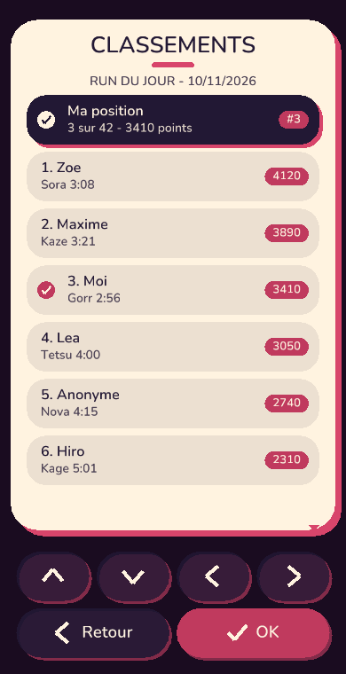
12 Classement sur telephone
Lignes hautes, texte lisible, defilement tactile.
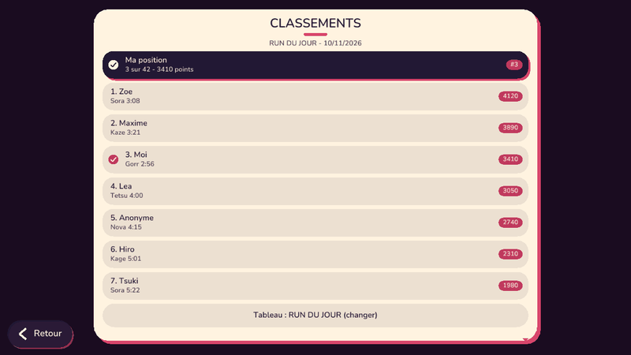
13 Notifications discretes
Un petit bandeau en bas de l ecran, quelques secondes, jamais pendant un coup : « Trophee : ... » (accent) et « Carnet : ... » (encre). Pas de fenetre, pas de pause.